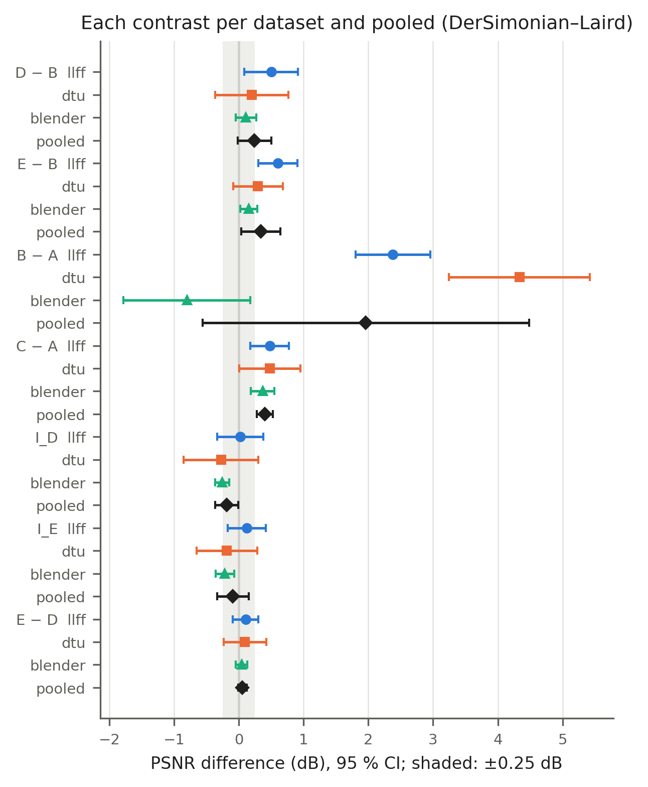
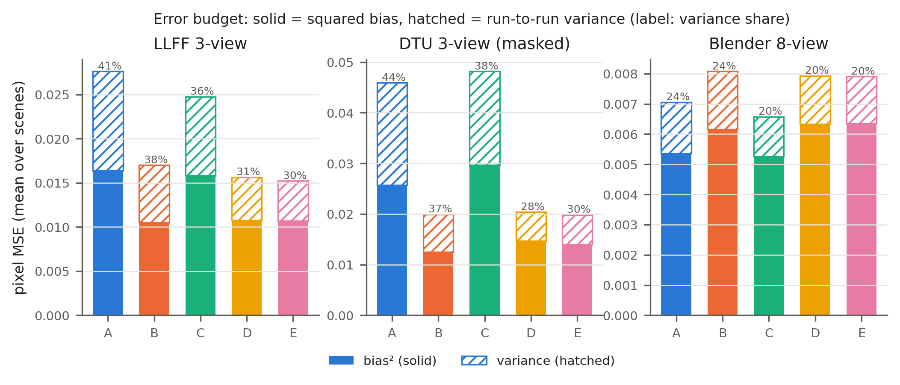
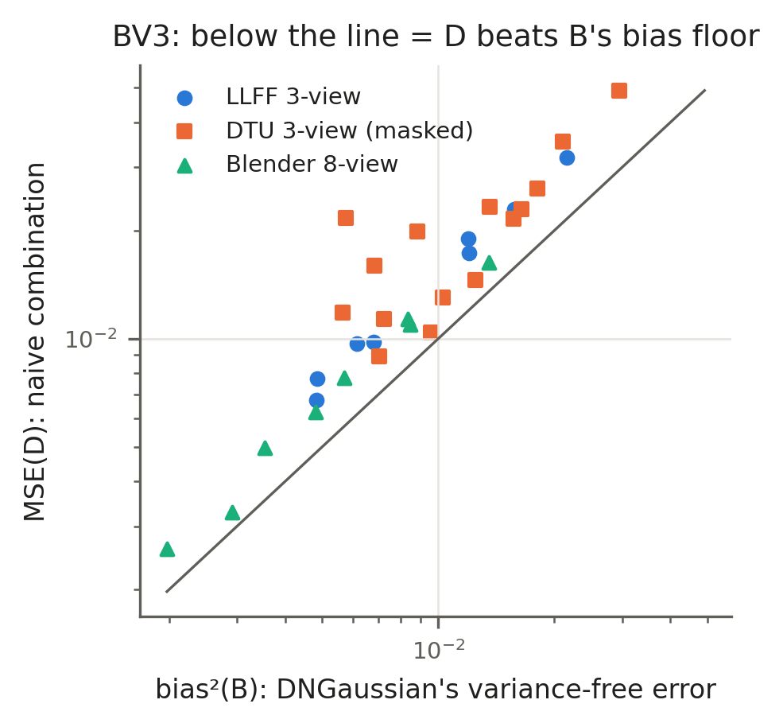
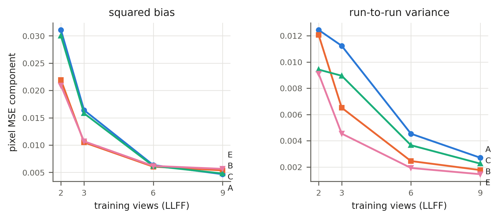
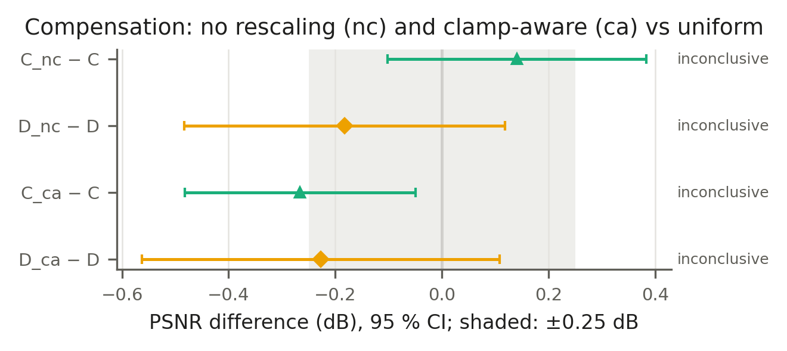
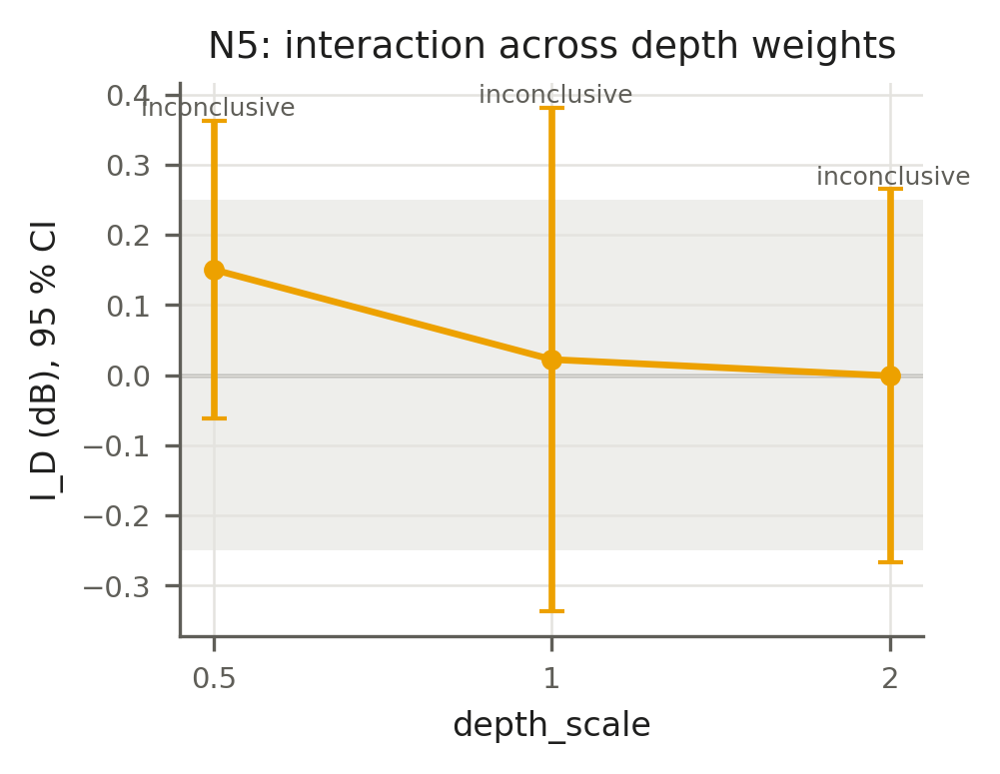
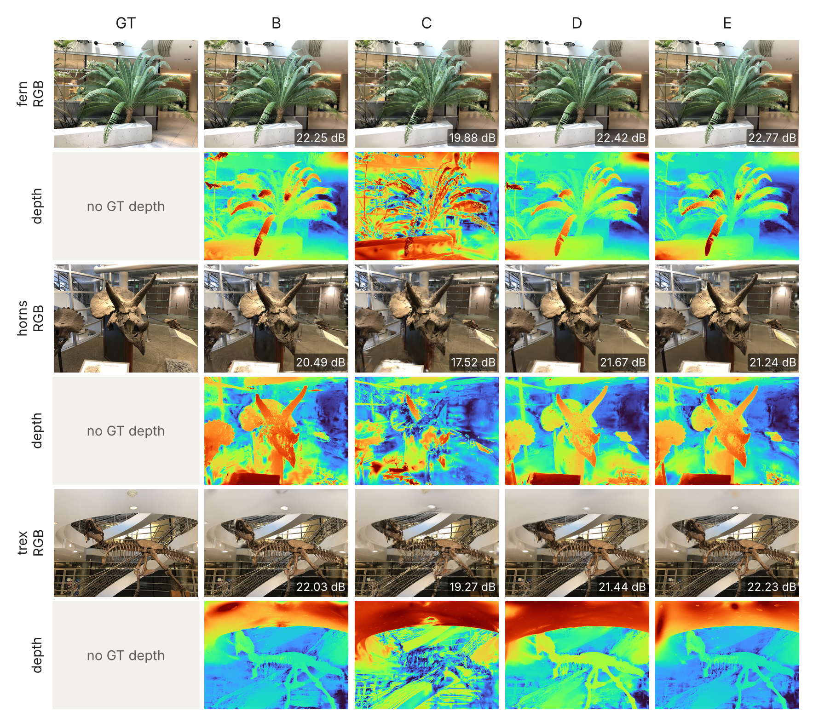

Depth meets Dropout
Are DNGaussian's depth regularization and DropGaussian's dropout complementary, redundant or interfering in sparse-view 3D Gaussian Splatting?
CSD361 course project · November 2026
- Complementary on very sparse forward-facing scenes. Adding dropout to DNGaussian gains +0.5 to +0.6 dB on LLFF at 2–3 views.
- Additive at best across datasets. The pooled interaction over LLFF, DTU and Blender is slightly negative (−0.19 dB).
- Depth fixes bias, dropout fixes variance. They combine well only where each one still does its job.
- Decoupling the depth passes from the dropout mask changes nothing measurable.
Question and design
Sparse-view 3DGS overfits the few training views. Two recent fixes attack this from different sides:
- DNGaussian (CVPR 2024) supervises rendered depth with a monocular depth prior.
- DropGaussian (CVPR 2025) randomly drops Gaussians during training.
Every variant below is the same code with different flags. We test A–E on three datasets with 3 seeds each.
| Variant | Depth | Dropout | Mask reaches the depth passes |
|---|---|---|---|
| A | – | – | – |
| B (DNGaussian) | ✓ | – | – |
| C (dropout only) | – | ✓ | – |
| D (naive combination) | ✓ | ✓ | yes |
| E (decoupled) | ✓ | ✓ | no |
The analysis rules were tagged before any result existed (prereg-v1…v3). All 1,169 runs came from tagged code on one RTX A4000. A combination is complementary if it beats both parents, and its interaction is ID = (D − C) − (B − A).
Results
PSNR in dB on held-out views, mean over 3 seeds. DTU metrics are masked.
| Variant | LLFF 3-view | DTU 3-view | Blender 8-view |
|---|---|---|---|
| A: none | 16.33 | 14.04 | 23.47 |
| B: depth (DNGaussian) | 18.71 | 18.37 | 22.66 |
| C: dropout | 16.80 | 14.51 | 23.83 |
| D: depth + dropout | 19.21 | 18.57 | 22.77 |
| E: depth + dropout, decoupled | 19.31 | 18.67 | 22.82 |
Each contrast below is paired by scene, with a 95 % CI. The pooled column is a DerSimonian–Laird random-effects meta-analysis.
| Contrast | LLFF | DTU | Blender | Pooled |
|---|---|---|---|---|
| E − B: adding dropout to DNGaussian | +0.60 | +0.30 | +0.15 | +0.34 [+0.04, +0.64] |
| C − A: dropout alone | +0.48 | +0.48 | +0.37 | +0.40 [+0.28, +0.53] |
| B − A: depth alone | +2.38 | +4.34 | −0.80 | heterogeneous |
| E − D: decoupling | +0.10 | +0.09 | +0.04 | +0.05 (≈ 0) |
| ID: interaction | +0.02 | −0.28 | −0.26 | −0.19 [−0.37, −0.01] |
| Verdict | complementary | inconclusive | partly redundant |

Why: the error budget
We split each variant's pixel error into squared bias (the error of the mean image over seeds) and run-to-run variance.
- In the sparse settings, depth's gain is mostly a bias reduction, and dropout's gain is mostly a variance reduction.
- Because the two fix different errors, their gains add up there.
- Where depth stops reducing bias (6–9 views, Blender), the gains no longer add.



What did not explain it
We pre-registered two other explanations, and the data support neither.
- The mask corrupts the depth passes. Shielding the depth passes changes nothing (E − D ≈ 0 everywhere), and neither depth pass alone carries an effect.
- Compensation hits the opacity cap. Removing the 1/(1−r) rescaling, or capping it per Gaussian, changes nothing significant. Clamp-aware dropout even trends worse.


Qualitative

Caveats
- With 8 scenes and 3 seeds, interactions below about 0.5 dB are below the detection limit. Pooling all 31 scenes reaches about 0.2 dB.
- Interaction signs differ between PSNR and SSIM.
- We used DropGaussian's schedule and DNGaussian's LLFF settings unchanged on every dataset.
- The rasterizer is nondeterministic, so a single-run 8-scene mean is uncertain by about ±0.3 dB.
Reproduce
git clone https://github.com/aayxsh23/dngs-dropout && cd dngs-dropout bash scripts/check.sh # seconds, no GPU # tables + figures from the committed per-run metrics: python experiments/stats.py --pooled llff=results/v2/tables/T1/runs.csv \ dtu=results/v2/tables/dtu/runs.csv blender=results/v2/tables/blender/runs.csv \ --blender_views 8 --tables /tmp/pooled
Training commands, data checksums and the full regeneration recipe are in the README.